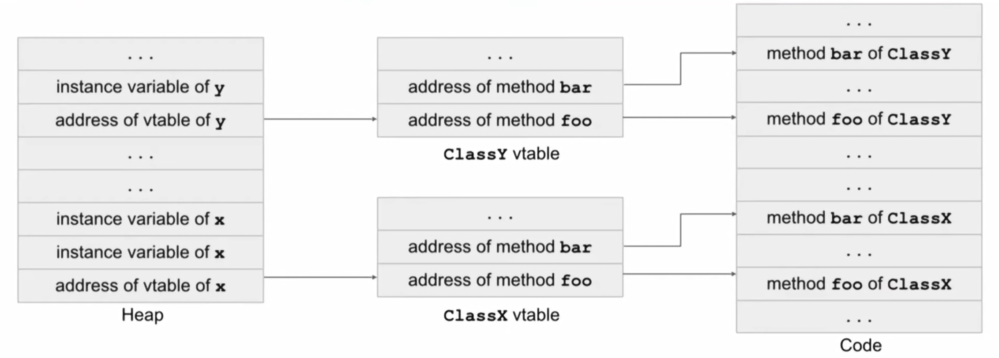
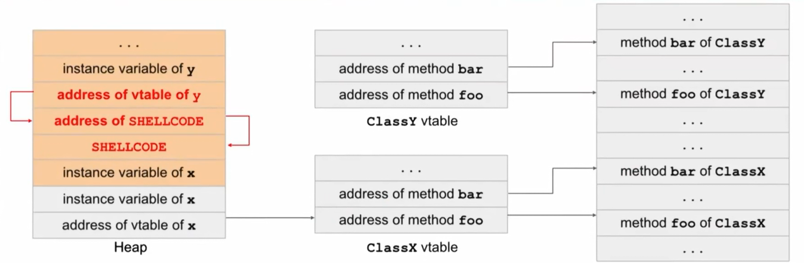

Vulnerabilities
Memory Safety Vulnerabilities¶
Buffer Overflow¶
Buffer overflow vulnerabilities are a particular risk in C
Absence of automatic bounds-checking for array or pointer accesses:
if the programmer declares an array char buffer[4], C will not automatically throw an error if the programmer tries to access buffer[5]
-
Defined outside of the function,
char buf[8]andauthenticatedare both located in the static part of memory. -
In C, static memory is filled in the order that variables are defined, so
authenticatedis at a higher address in memory thanbuf
static: | | |---| |authenticated| |buf| |buf| ||
If the attacker can write 9 bytes of data to buf (with the 9th byte set to a non-zero value), then this will set the authenticated flag to true, and the attacker will be able to gain access.
| | |---| | fnptr | |buf| |buf| ||the attacker can overwrite fnptr with any address of their choosing, redirecting program execution to some other memory location
Stack Smashing¶
One powerful method for exploiting buffer overrun vulnerabilities takes advantage of the way local variables are laid out on the stack.
Stack Memory Layout¶
stack: || |---| |rip of vulnerable| |fsp of vulnerable| |buf| |buf| ||Data storage order:
- The stack only grows down when we call a new function and need to allocate additional memory. When we call gets, user input is still written from lower addresses to higher addresses.
- x86 is little-endian
Attack¶
-
shellcode at a known address input: AAAAAAAAAAAA\xef\xbe\xad\xde
0xDEADBEEF AAAA AAAA AAAA -
shellcode injection
-
short: || |---| |&buf| |AAAA| |shellcode| |shellcode| ||
-
long: || |---| |shellcode| |&rip + 4| |AAAA| |AAAA| |AAAA| ||
Vulnerable C Library Functions¶
- gets -> fgets
- strcpy -> strncpy / strlcpy
- strlen -> strnlen
- sprintf -> snprintf
Integer Overflow¶
C compiler won’t warn about the type mismatch between signed int and unsigned int; it silently inserts an implicit cast.
char buf[8];
void vulnerable() {
int len = read_int_from_network();
char *p = read_string_from_network();
if (len > 8) {
error("length too large: bad dog, no cookie for you!");
return;
}
memcpy(buf, p, len);
}
len
void vulnerable() {
size_t len;
char *buf;
len = read_int_from_network();
buf = malloc(len+5);
read(fd, buf, len);
...
}
len e.g. 0xFFFFFFFF
In this case, the code allocates a 4-byte buffer and then writes a lot more than 4 bytes into it: a classic buffer overflow.
check bounds whenever add to integers
void safe(size_t len, char *data){
if (len > MAX_SIZE - 2) {
return;
}
char *buf = malloc(len + 2);
if (!buf) {
return;
}
memcpy(buf, data, len);
buf[len] = '\n';
buf[len + 1] '\0';
}
Format string vulnerabilities¶
arguments to a function are pushed onto the stack in reverse order || |---| |z| |y| |x| |&"x has the value %d, y has the value %d, z has the value %d \n"| |rip of printf| |sfp of printf|In cases of a mismatch, it will fetch some data from the stack that does not belong to the function call.
%n → Treat the argument as an address and write the number of characters that have been printed so far to that address
mismatch:printf("000%n"); // write 3 to the integer pointed to by address located 8 bytes above the RIP of printf
|&"000%n" // the first argument|
|rip of printf| |fsp of printf|
char buf[64]
void vulnerable(void) {
char *secret_string = "pancake";
int secret_number = 42;
if (fgets(buf, 64, stdin) == NULL) {
return;
}
printf(buf);
}
- input: %d%n
- output: 42 write 2 to the secret_string
never use untrusted input in the first argument of printf
Heap Vulnerability¶
Objects are allocated in the heap (using malloc in C and new in C++...)
Heap Overflow¶
C++ vtable Each class has a virtual table (table of function pointers), and each object points to its class's vtable  Suppose an instance variable of x is a buffer that we can overflow:  when y calls its method, the shellcode will be executed